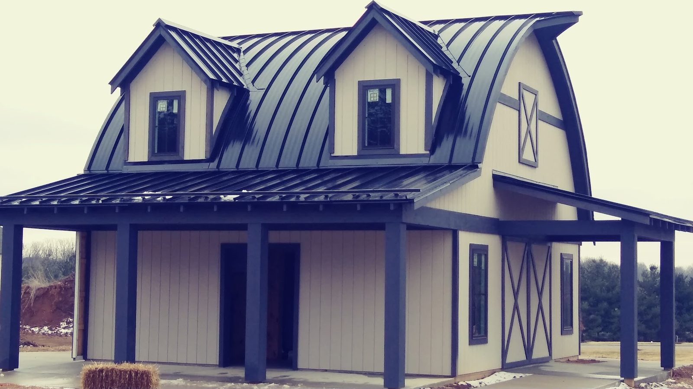

Roofing
Metal and shingle roofs, replaced or repaired. Gutters and metal roofs can be done together.
- Metal roofs
- Shingle roofs


Still Waters Roofing & Construction
Friendly service, fair prices and honest advice on your roof.
Request an estimateCall (812) 361-6957
A note from the team
Straight answers about your roof and gutters. Friendly service from start to finish.
Our work
Roofing, siding, gutters, windows, pole barns, garages and decks. One company.
Metal and shingle roofs, replaced or repaired. Gutters and metal roofs can be done together.
Gutters, gutter guards and siding. Clogged gutters get a look and a clear fix.

Building work beyond the roof: pole barns, garages, decks and windows.

Case studies


What clients wrote
4.8 · 91 Google reviews
We had a great experience working with Still Waters. Originally, we thought we needed our gutters cleaned or fixed because water wasn’t passing through. Joe was very friendly and he was able to get on the roof and find that there were 3 smaller balls stuck in the gutters, solving our problem immediately. We then decided to have gutter guards installed and they were so easy to work with.
Still Waters Roofing did a amazing job replacing my gutters and metal roof. Dealing with Joe, Lisa and Audrey was the best experience. They are the BEST! Great people and you know that you are in good hands. Got to stop in every now and then just to say Hi ! I highly recommend this Company that you can trust and will help through the process.
Couldn't be happier with the quality of work we received from Still waters. This is our second time having them work on our house. We have already gotten our next project scheduled for the future! We have and will continue to recommend them for your home repair needs
About us
Roofing and building done by a friendly local crew. Stop in to say hi.
Joe, Lisa and Audrey run a friendly shop. Many jobs lead to a second one on the same house.

Hours & directions
705 E Morgan St, Spencer, IN 47460
Stop in to say hi, or call ahead to talk through your project.